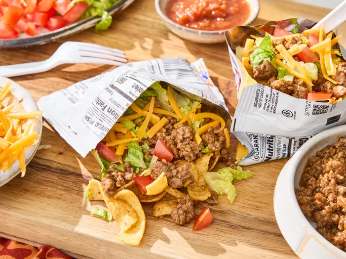

Taco in a bag

This easy and fun Taco in a Bag recipe is perfect for parties or a quick weeknight dinner. Crunchy tortilla chips are topped with seasoned ground beef, fresh veggies, and your favorite taco toppings, all served in a convenient bag for easy eating!
- Prep Time: 10 Min.
- Cook Time: 15 Min.
- Total Time: 25 Min.
- Servings: 4
Ingredients
- 1 lb ground beef
- 1 packet taco seasoning mix
- 1 cup water
- 4 large bags of tortilla chips (individual size)
- 1 cup shredded lettuce
- 1 cup diced tomatoes
- 1 cup shredded cheddar cheese
- ½ cup sour cream
- ½ cup salsa
- Optional toppings: sliced jalapeños, chopped onions, olives, guacamole
Instructions
- In a large skillet, cook the ground beef over medium heat until browned. Drain any excess fat.
- Add the taco seasoning mix and water to the skillet. Stir to combine and simmer for 5-7 minutes until the sauce thickens.
- While the beef is cooking, prepare your toppings: shred the lettuce, dice the tomatoes, and shred the cheese.
- Once the beef is ready, open each bag of tortilla chips and carefully spoon the seasoned beef into each bag.
- Add your desired toppings to each bag: start with shredded lettuce, followed by diced tomatoes, shredded cheese, a dollop of sour cream, and a spoonful of salsa. Add any optional toppings you like.
- Close the bags and gently shake them to mix the ingredients together. Serve immediately and enjoy your Taco in a Bag!